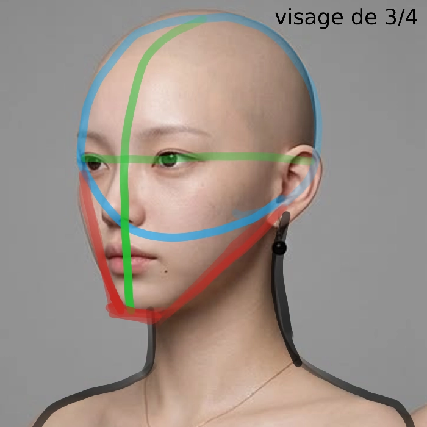
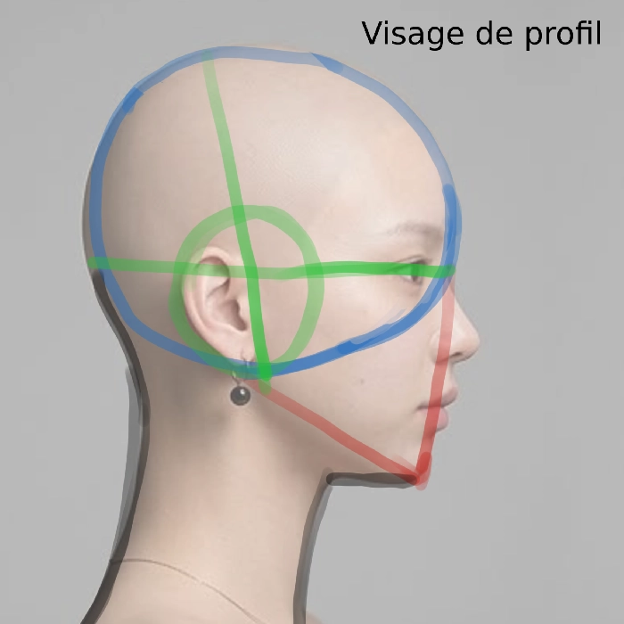

Comment dessiner la tête
Vous êtes-vous toujours demandé comment
les professionnels réussissent
parfaitement à reproduire les
visages sous tous les angles ?
Eh bien, rassurez-vous :
cela n'est pas sorcier.
Je vais vous montrer toutes
les étapes pour arriver à dessiner
de beaux visages avec des angles
différents de celui de face.
Pour commencer, voyons sur des
modèles vivants ce que donneraient
les techniques pour former ces
visages.
Le visage de face est parfait
pour débuter, nous allons
donc commencer par celui-ci.

Le visage de face se compose d'un rond (en bleu sur la référence) qui constitue la base du crâne. Ensuite, les lignes vertes sont les deuxièmes à être tracées. Elles servent de repères pour placer les yeux au centre de la tête (le trait horizontal) et pour centrer le reste des éléments du visage, comme le menton (la ligne verticale). Enfin, il ne restera plus qu'à tracer la mâchoire, qui est en rouge sur la référence.
et en manga, à quoi cela rendrait ?
Avec traits de construction

Sans traits de construction

Une fois que vous avez compris ces bases, vous pourrez avancer et dessiner le visage sous d'autres angles comme, par exemple, de profil et de trois-quarts, comme sur les images suivantes.


Si vous n'avez pas compris le cours, n'hésitez pas à m'en faire part sur le serveur discord, dans le salon dédié aux cours.